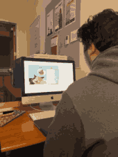
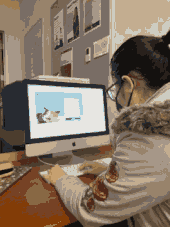
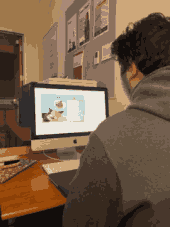
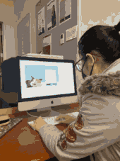

Significant Observations
1.) After completing the Mad Lib form, each user expected to have a button to return back to the form. They opted to refreshing the browser when they couldn't find it.
2.) It was clear to each user that the image in the dream bubble changed according to the activity they chose.
3.) The overall experience seemed enjoyable: completing the form, reading the story they generated, and seeing a different image pop up with each activity choice.
Planned Improvements
1.) Add a "Generate Another Dream" button to take the user back to the form.
2.) Add CSS animations to the inserted activity images. This will help to aid the imagery of the story and make the overall experience more engaging.
3.) Improve the positioning of the images and other elements. I do not plan on making this project completely responsive, but it looks odd when the cat and food jar appear to be floating when the viewport isn't 1200x750.